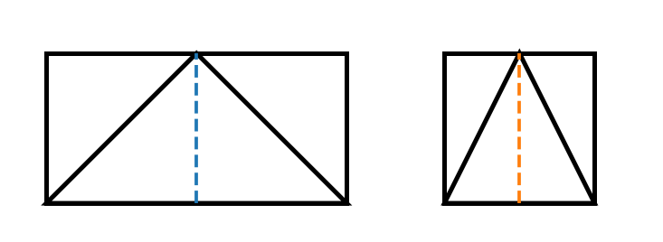

| البند | البيان | البند | البيان |
|---|---|---|---|
| المادة | الرياضيات | الصف | السادس الأساسي |
| الوحدة | السابعة: الهندسة | عنوان الدرس | مساحة الأشكال الهندسية المستوية |
| عدد الحصص المقترح | 3 حصص × 45 دقيقة | المجال | الهندسة والقياس |
| نمط التعلم | استكشاف بصري – عمل تعاوني – تطبيق محوسب – تقويم | الأداة المحوسبة | ورقة عمل HTML تفاعلية: مختبر مساحة المستطيل والمثلث |
| اسم المعلم | زهدي زاهدة | التاريخ : ........................................ |
فكرة الدرس المركزية
يبني الدرس فهم الطالب لمساحة الأشكال الهندسية المستوية من خلال الربط بين مساحة المستطيل/المربع ومساحة المثلث المشترك معه في القاعدة والارتفاع؛ فمساحة المثلث تساوي نصف مساحة المستطيل أو المربع المشترك معه في القاعدة والارتفاع. وينتقل الطالب من العدّ على شبكة المربعات إلى استخدام العلاقة الرياضية في مواقف حياتية ومسائل مناطق مظللة.

الأهداف التعليمية السلوكية
• أن يوضح الطالب مفهوم مساحة الشكل الهندسي بوصفها عدد الوحدات المربعة التي تغطي الشكل.
• أن يحسب الطالب مساحة مستطيل أو مربع معلوم الأبعاد مع كتابة وحدة القياس المناسبة.
• أن يستنتج الطالب أن مساحة المثلث تساوي نصف مساحة المستطيل أو المربع المشترك معه في القاعدة والارتفاع.
• أن يجد الطالب مساحة مثلث معلوم طول قاعدته وارتفاعه باستخدام العلاقة: مساحة المثلث = 1/2 × طول القاعدة × الارتفاع.
• أن يحل الطالب مسألة حياتية أو مسألة منطقة مظللة بتفكيك الشكل إلى أشكال معلومة المساحة.
المفاهيم والمصطلحات والمهارات
| المحور | التفصيل |
|---|---|
| المفاهيم الجديدة/المؤكدة | المساحة، الوحدة المربعة، القاعدة، الارتفاع، نصف المساحة، المنطقة المظللة، الشكل المستوي. |
| التعلم القبلي | مفهوم المستطيل والمربع والمثلث، الضرب، نصف العدد، وحدات الطول والمساحة، قراءة الأطوال على الشكل. |
| المهارات الرياضية | القياس، المقارنة، الاستنتاج، التبرير، استخدام قانون رياضي، حل المشكلات، قراءة الرسم الهندسي. |
| القيم والاتجاهات | الدقة في القياس، التعاون، احترام حلول الزملاء، ربط الرياضيات بالحياة اليومية. |
استراتيجيات التدريس والوسائل
| البند | التفصيل |
|---|---|
| استراتيجيات التدريس | الحوار والمناقشة، التعلم التعاوني، الاستقصاء بالمقصوصات، التعلم المحوسب، حل المشكلات، التعلم بالأقران. |
| الوسائل التعليمية | الكتاب المدرسي، السبورة، جهاز عرض/لوح ذكي، أجهزة حاسوب أو أجهزة لوحية، الورقة المحوسبة HTML، ورق مربعات، مقصوصات مستطيلات ومربعات ومثلثات، مسطرة وألوان. |
| التقويم | تقويم قبلي بأسئلة شفوية، تقويم تكويني بالملاحظة وقائمة الرصد، تقويم ختامي بورقة العمل المحوسبة وتذكرة خروج. |
نموذج التحضير
| اليوم/التاريخ | الأهداف | المفاهيم الجديدة | التعلم القبلي | الأنشطة والتدريبات | التقويم | التغذية الراجعة |
|---|---|---|---|---|---|---|
| اليوم: ........ التاريخ: ........ |
أن يوضح الطالب مفهوم مساحة الشكل الهندسي بوصفها عدد الوحدات المربعة التي تغطي الشكل. | مساحة، وحدة مربعة، داخل الشكل | تمييز الشكل الهندسي، عد المربعات، معنى كلمة يغطي. | تمهيد بصورة حقيبة/لوحة مزخرفة: يناقش المعلم أين تظهر المساحة في الحياة. يفتح الطلاب الورقة المحوسبة، ويلاحظون تلوين المنطقة الداخلية للشكل. ثم يعبّرون بلغتهم عن معنى المساحة. | سؤال شفوي: عندما نريد تغطية أرضية غرفة بالبلاط، هل نحسب طول الحواف أم المنطقة الداخلية؟ ولماذا؟ | إذا خلط الطالب بين المساحة والمحيط، يعود المعلم إلى اللون: الداخل = مساحة، الحواف = محيط. |
| اليوم: ........ التاريخ: ........ |
أن يحسب الطالب مساحة مستطيل أو مربع معلوم الأبعاد مع كتابة وحدة القياس المناسبة. | مساحة المستطيل، مساحة المربع، سم²، م² | الضرب كعد صفوف وأعمدة، وحدات الطول. | يعرض المعلم مستطيلاً على شبكة مربعات. يعد الطلاب الصفوف والأعمدة، ثم يصوغون العلاقة: مساحة المستطيل = الطول × العرض، ومساحة المربع = الضلع × الضلع. يطبق الطلاب السؤالين 1 و2 في الورقة المحوسبة. | أوجد مساحة مستطيل طوله 20 سم وعرضه 10 سم، ثم اكتب الوحدة الصحيحة. | التأكيد على أن الناتج في المساحة يكون بوحدة مربعة، وليس سم فقط. |
| اليوم: ........ التاريخ: ........ |
أن يستنتج الطالب أن مساحة المثلث تساوي نصف مساحة المستطيل أو المربع المشترك معه في القاعدة والارتفاع. | نصف المساحة، مثلث مشترك في القاعدة والارتفاع | النصف، المستطيل، المربع، المثلث، الارتفاع. | نشاط قص ولصق: يقص الطلاب مثلثاً من مستطيل/مربع أو يطوون الشكل على خط ارتفاعه. يناقشون: لماذا المثلث يساوي نصف مساحة الشكل؟ ثم يشاهدون التمثيل في المختبر المحوسب عند تغيير القاعدة والارتفاع. | أكمل: إذا كانت مساحة المستطيل المشترك مع المثلث 60 سم²، فإن مساحة المثلث = ........ سم². | إذا نسي الطالب عامل النصف، يطلب منه المعلم تركيب مثلثين متطابقين لتكوين مستطيل/مربع. |
| اليوم: ........ التاريخ: ........ |
أن يجد الطالب مساحة مثلث معلوم طول قاعدته وارتفاعه باستخدام العلاقة الرياضية. | مساحة المثلث = 1/2 × القاعدة × الارتفاع | تحديد القاعدة، تحديد الارتفاع العمودي، الضرب والقسمة على 2. | يحل الطلاب أمثلة من الكتاب ومن الورقة المحوسبة: مثلث قاعدته 12 وحدة وارتفاعه 8 وحدات. يوضح المعلم ضرورة اختيار الارتفاع العمودي على القاعدة أو امتدادها. | حل فردي: مثلث قاعدته 14 م وارتفاعه 6 م؛ أوجد مساحته. | تصحيح شائع: لا يكفي اختيار أي ضلع؛ الارتفاع يجب أن يكون عمودياً على القاعدة. |
| اليوم: ........ التاريخ: ........ |
أن يحل الطالب مسألة حياتية أو مسألة منطقة مظللة بتفكيك الشكل إلى أشكال معلومة المساحة. | منطقة مظللة، تحليل شكل مركب | مساحة المستطيل، مساحة المربع، مساحة المثلث. | عمل مجموعات: كل مجموعة تحلل شكلاً مركباً إلى مستطيل/مربع ومثلث، ثم تكتب خطوات الحل. بعد ذلك يكمل الطلاب أسئلة الورقة المحوسبة والتذكرة الختامية. | تذكرة خروج: مستطيل 12×5 قُصّ منه مثلث قاعدته 12 وارتفاعه 5. ما مساحة الجزء المتبقي؟ | يركز المعلم على خطوات الحل: أكتب المعطيات، أحدد المطلوب، أختار القانون، أكتب الوحدة. |
خطة سير الحصص الثلاث
| الحصة | محور الحصة | الإجراءات والزمن |
|---|---|---|
| الحصة الأولى | تهيئة وربط حياتي – مفهوم المساحة – حساب مساحة المستطيل والمربع | 5 د: موقف حقيبة مزخرفة/أرضية غرفة. 10 د: تلوين الداخل والحواف في النشاط المحوسب. 15 د: نشاط الكتاب حول مساحة المستطيل. 10 د: تطبيقات قصيرة على المستطيل والمربع. 5 د: تلخيص شفوي. |
| الحصة الثانية | العلاقة بين مساحة المثلث ومساحة المستطيل/المربع المشترك معه | 5 د: مراجعة المساحة ووحدة القياس. 15 د: قص/طي شكل مستطيل ومربع لاكتشاف نصف المساحة. 15 د: صياغة قانون مساحة المثلث وتطبيقات. 5 د: سؤال تحقق. 5 د: واجب قصير. |
| الحصة الثالثة | تطبيقات ومسائل مناطق مظللة وورقة عمل محوسبة | 5 د: استدعاء القوانين. 15 د: حل مسائل جماعية على مناطق مظللة. 15 د: تنفيذ الورقة المحوسبة فردياً/ثنائياً. 5 د: عرض حلول مختارة. 5 د: تذكرة خروج. |
المفاهيم الخاطئة والصعوبات المتوقعة وإجراءات علاجها
| الخطأ أو الصعوبة | إجراء علاجي مقترح |
|---|---|
| الخلط بين المساحة والمحيط | تلوين الحواف بلون وتلوين الداخل بلون آخر، وربط المحيط بالسياج والمساحة بالبلاط/التغطية. |
| نسيان عامل النصف عند حساب مساحة المثلث | استخدام مقصوصتين لمثلثين متطابقين لتكوين مستطيل، ثم كتابة: مثلث واحد = نصف المستطيل. |
| اختيار ارتفاع غير عمودي على القاعدة | رسم علامة الزاوية القائمة عند الارتفاع، وتدريب الطالب على إنزال العمود من الرأس إلى القاعدة أو امتدادها. |
| كتابة وحدة طول بدلاً من وحدة مربعة | تذكير دائم بأن المساحة تغطي منطقة، لذلك وحدتها سم² أو م² أو وحدة مربعة. |
| صعوبة تحليل المنطقة المظللة | تجزئة الشكل المركب إلى أشكال مألوفة، ثم كتابة مساحة كل جزء وجمعها أو طرحها حسب المطلوب. |
ورقة العمل المحوسبة
اسم الملف المرفق: ورقة_عمل_محوسبة_مساحة_الأشكال. html
| العنصر | التفصيل |
|---|---|
| نوع الورقة | HTML تفاعلية تعمل محلياً على المتصفح دون الحاجة إلى إنترنت. |
| أهدافها | تثبيت مفهوم المساحة، حساب مساحة المستطيل والمربع، استنتاج نصف مساحة المثلث، تطبيق قانون مساحة المثلث، حل مسألة منطقة مظللة. |
| طريقة التنفيذ | يفتح المعلم الملف على اللوح الذكي في مرحلة الاستكشاف، ثم يطلب من الطلاب فتحه فردياً أو ثنائياً للإجابة والحصول على تغذية راجعة فورية. |
| أدوات التقويم داخلها | إدخال إجابات رقمية، أسئلة اختيار من متعدد، صح/خطأ، درجة نهائية، ورسائل تغذية راجعة فورية. |
أسئلة ورقة العمل المحوسبة ومفتاح الإجابة
| رقم | السؤال | الإجابة النموذجية |
|---|---|---|
| 1 | مستطيل طوله 20 سم وعرضه 10 سم. أوجد مساحته. | 200 سم² |
| 2 | مثلث يشترك مع المستطيل السابق في القاعدة والارتفاع. أوجد مساحته. | 100 سم² |
| 3 | مربع طول ضلعه 6 سم. أوجد مساحته. | 36 سم² |
| 4 | مثلث يشترك مع المربع السابق في القاعدة والارتفاع. أوجد مساحته. | 18 سم² |
| 5 | مثلث طول قاعدته 12 وحدة وارتفاعه 8 وحدات. أوجد مساحته. | 48 وحدة مربعة |
| 6 | اختر وحدة قياس المساحة المناسبة. | سم² أو وحدة مربعة |
| 7 | منطقة مظللة = مساحة مستطيل 12×5 ناقص مثلث قاعدته 12 وارتفاعه 5. أوجد المساحة. | 30 وحدة مربعة |
| 8 | صح/خطأ: مساحة المثلث المشترك مع المستطيل في القاعدة والارتفاع تساوي مساحة المستطيل. | خطأ، تساوي نصفها |
| 9 | اكتب قاعدة مساحة المثلث. | 1/2 × القاعدة × الارتفاع |
| 10 | سؤال تفسيري: لماذا نضرب في 1/2؟ | لأن مثلثين متطابقين يكونان مستطيلاً/مربعاً له القاعدة والارتفاع نفسيهما. |
نشاط إثرائي وواجب بيتي
• نشاط إثرائي: صمم بطاقة تهنئة مستطيلة، ثم أضف عليها مثلثاً زخرفياً. اكتب أبعاد الأشكال واحسب مساحة كل جزء والمساحة الكلية.
• واجب بيتي: حل تمارين ومسائل الدرس في الكتاب، مع اختيار مسألة واحدة وشرح خطواتها برسمة توضيحية.
• تذكرة خروج: إذا كانت مساحة مستطيل 72 سم²، فما مساحة مثلث يشترك معه في القاعدة والارتفاع؟ ولماذا؟
مراجع بناء التحضيرات
• كتاب الرياضيات للصف السادس الأساسي – الفصل الثاني – الوحدة السابعة: الهندسة، الدرس الأول: مساحة الأشكال الهندسية المستوية.
• دليل المعلم لوحدة الهندسة للصف السادس، للاستفادة من بنية الأهداف والمفاهيم الخاطئة والتقويم.
• نموذج التحضير المعتمد للدروس المحوسبة، للاستفادة من أعمدة النموذج ومنطق ربط الأهداف بالأنشطة والتقويم والتغذية الراجعة.
• نسخة تحضير معلم سابقة، للاستفادة من أسلوب توزيع التهيئة والعرض والإغلاق والتقويم.